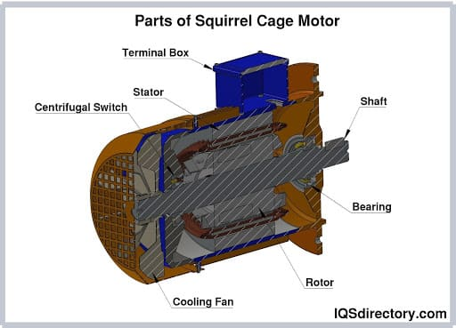

AC Motor
What is a AC Motor?
An AC motor or alternating current motor is an electric motor that consists of a stator with a coil that is supplied with alternating current to convert electric current into mechanical power. The stator is the stationary part of the motor while the rotor is the rotating part. AC motors can be single or three phase with three phase motors mainly used for bulk power conversion. Single phase AC motors are used for small power conversions.
There are two types of AC motors, which are synchronous and induction. In a synchronous motor, the rotation of the shaft is at the same pace as the frequency of the applied current with multiphase AC electromagnets on the stator that produce a rotating magnetic field. An induction motor, or asynchronous motor, is a single excited motor where current is applied to one part of the motor, the stator. Flux from the stator cuts the short circuited coil in the rotor, which feels torque that makes the rotor rotate.
AC motors are a power source for a wide variety of applications due to their flexibility, efficiency, and noiseless operation. They are used on pumps, water heaters, garden equipment, ovens, off road equipment and are commonly found in many appliances, equipment, and tools. They are an intriguing and interesting device since they can fit easily into a wide range of applications.
How an AC motor works
The term AC motor describes several versions of the motor, which include single phase, three phase, brake, synchronous, asynchronous, customized, two speed, and three speed single phase. The difference between the various versions relates to the type of work that is required where some forms of AC motors are simple and used for small jobs while other versions are designed for bigger more demanding work. A key difference is the phase of the electrical feed, which is different for residential use compared to industrial use.
Residential electricity is single or double phased while electricity for industrial use is three phased. This distinction is the reason for the difference between industrial AC motors and residential ones.
AC motors are referred to as induction motors since they use electric current to produce torque, which is created by electromagnetic induction from the magnetic field of the stator.
Start Up:-
The stator produces a rotating magnetic field. It has a solid metal axle, a loop of wire, coils, squirrel cage, and interconnections. Though a squirrel cage is not found in all AC motors, it is the most common type. In AC motors, electricity is sent directly to the outer coils of the stator. The stator has multiple plates that extend out from its center with copper magnetic wire.
For a three phase AC motor, it has three phase windings with a core and housing. The windings are 120o apart, which can be six or twelve windings . The windings are placed on a laminated iron core. The construction of the core can be seen in the diagram below.
Rotor:-
Unlike a DC motor, the rotor on an AC motor does not have any connection with the external power source. It receives its power from the stator. In a three phase induction motor, the rotor can be a squirrel cage or wound version.
In the squirrel cage version, the rotor consists of rotor bars with end rings at both ends. There are several versions of the squirrel cage rotor, which include split phase, capacitor start, capacitor start and run, permanent split phase capacitor run, and shaded pole with classifications of A, B, C, D, and E. In the majority of cases, the squirrel cage is made of aluminum or copper.
In the operation of a squirrel cage motor, the bars of the rotor interact with the stator‘s electromagnetic field (EMF). As the current fluctuates, the EMF does the same causing the rotor to rotate producing rotational motion. A key factor in the motion is that the rotor does not turn at the same frequency as the AC current and is constantly trying to catch up, which is how the rotation is produced. If it did have the same frequency, the rotor would freeze, and there would not be any motion.
A wound or slip ring AC motor is a special type of AC motor. It contains the exact same parts as all AC motors but is always three phase. The cylindrical laminated core of the rotor is wound exactly like the windings on the stator with wire. The terminal ends of the wires are connected to slip rings on the output shaft. The slip rings connect to brushes and a variable speed resistor. The slip rings provide control of the speed and torque of the motor, which is the main positive feature of a wound rotor.

Wound motors are asynchronous where there is a difference between the stator speed and the output speed. When generating current in the rotor, the motor will have slippage between the rotating field and the rotor. As the motor is powered, the rotor lessens the strength of the stator, which allows the control of the rotation and the ability to choose torque and running characteristics.
Types Of AC motors
Single Phase AC Motors
Single phase AC motors are used where there is a single phase supply. This type of AC motor is smaller and less expensive. They are constructed using fractional kilowatt capacity. The stator is activated by a single phase AC electrical supply. Unlike a three phase AC motor, a single phase motor has one main winding and one auxiliary winding, which is perpendicular to the main winding.
The rotor rotates according to the sum of two oppositely rotating fields, which is the double revolving field theory. The torque that is produced is equal and opposite.
Polyphase AC Motor
Polyphase Motors, or many phase motors, are a type of AC motor that can be two or three phase and are similar to single phase motors in how they operate. The stator poles in a polyphase motor are not aligned with each other, which means that the rotor passes by the stator poles at different times. A polyphase system has a group of equal voltages at the same frequency that are placed to have an equal phase difference between the adjacent electromagnetic fields (EMF). A polyphase system can be two, three, or six phase with the majority being three phase.